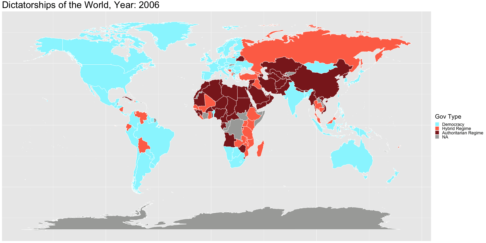
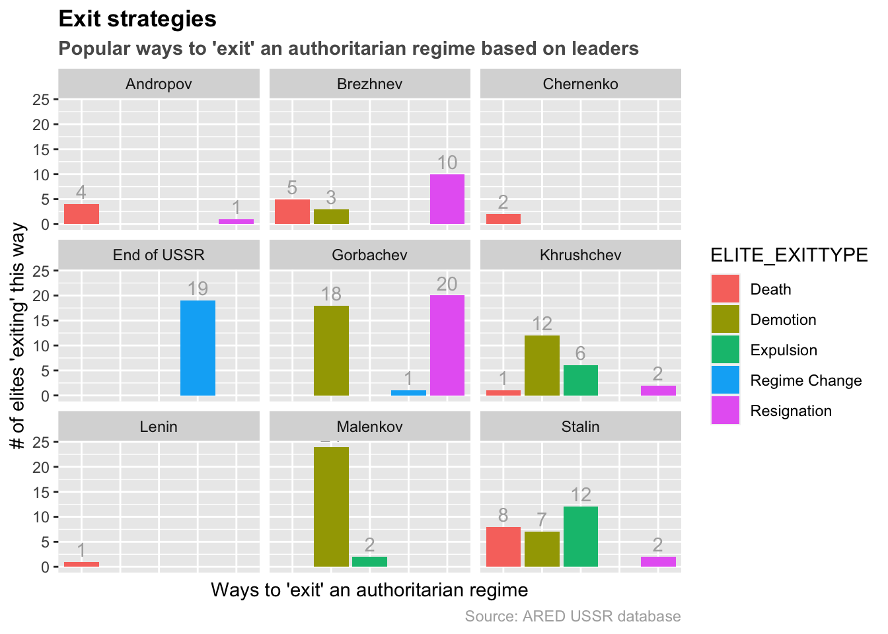
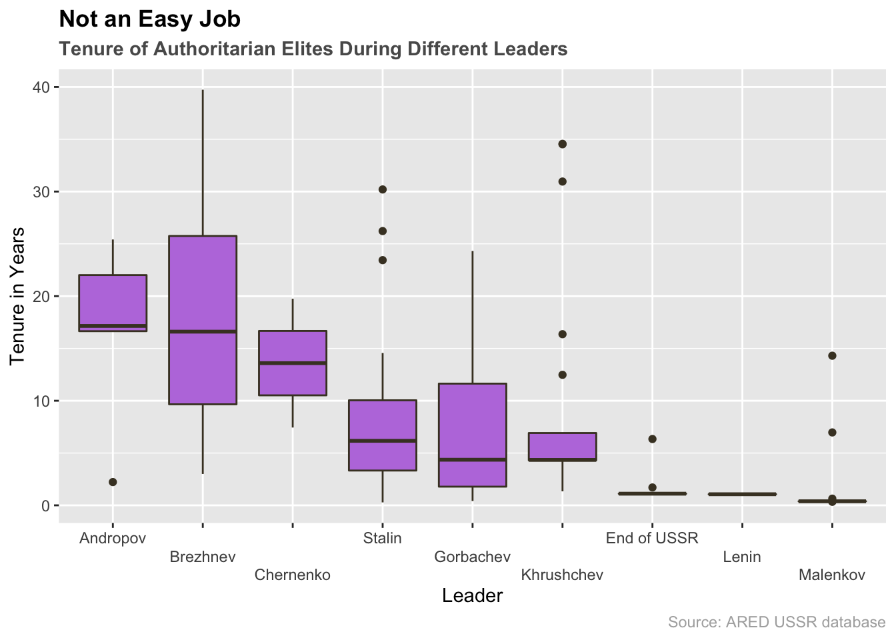

Chapter 5 Results
5.1 World Overview
Figure 5.1: A caption
Note: This gif is loaded from a file. It would render directly from the code seen above in the same way, but it could take upwards of an hour.
The graph above sets the world stage, flipping through the years and highlighting the changing landscape of democracies and dictatorships. A lot of information can be inferred from this, and a lot of questions prompted. One such example relates to Domino Theory. Disastrous foreign policy aside, does the theory hold any water at all as it relates to dictatorships and democracies? A look at the Americas and Europe versus Africa, Northern Asia/Eurasia and The Middle East might suggest that government types tend to cluster or influence those around them. The data here is too shallow to properly explain all the reasons dictatorships or democracies develop, but it’s interesting nonetheless.
Another observation can be made about how fickle new democracies are. Especially in South America the transitions from blue to gold were frequent (democracy to military dictatorship, so in other words a military coup). This is seen much less the more established a democracy becomes.
Another common question that could be asked is if democracy is the future, is the direction we’re headed towards a truly democratic world?

With the above graph we aim to shine some light on whether we’re headed towards a democratic future. At the end of the time line, in 2008, there are less dictatorships in every continent (other than Oceania) than there was at the start– or almost at any other point in history. This by no means guarantees a dictatorship free future, after all some of the worst offenders are still powerful, and we saw how frequently democracies were overthrown by the military in the world map, but it is hopeful evidence of a bright future.

This graph is a continuation of the first one using slightly different criteria (the democracy index instead of the regime designation). While the previous graph provided a useful look at history, this one provides a more accurate view of the current affairs of the world.
5.2 Case Study: USSR
Let us first look at the history of the USSR.
From here we can see 4 major leaders of USSR: Stalin, Khruschev, Brezhnev and Gorbachev. The leaders in between - Malenkov, Andropov and Chernenko, are leaders in transition periods, as seen by the short tenure of each of them. We can expect to see some tumultuous activity both inside, by the motion of the elites as well as from the outside world. First, let’s see the statistics of the elites that had their careers cut short during each of these periods.

From this graph, we can see that the shorter the regime is (Andropov, Chernenko) the less drastic the changes. One outlier here is Malenkov, where there were many demotions despite the short time in power. This seems to align with the fact that he was a successor of Stalin, and was struggling to keep his power in Kremlin. That might also explain his short time in power.
Another observation is that Stalin was the most active in executing/exiling the elites, as he has the most death/expulsion counts among all of the leaders. This seems to coincide with history.
Finally, we can see that Gorbachev comes top in the number of resignations during his period. This may have to do with the fact that his regime was the last of USSR. It may be that many elites foresaw this downward tendency of the USSR and as such decided to resign before facing a dawning regime change.

This is a boxplot showing the distribution of tenures during each leaders. Shorter tenures in light of group management can also mean instability. With the exception of Lenin (since his rule in USSR was so short), we can see that both Malenkov and the End of USSR was a very tumultuous time, with median tenure being as low as 1~2 years. In contrast, we see that during times where there are less people leaving - Andropov, Brezhnev, Chernenko - we see that the average tenure was very long, and the people who left had been in power for a long time. This might show a time of generational change. For Brezhnev, we see a wide distribution as well as a large median tenure, as his regime lasted longer and was more stable. Despite a long time in power, it looks like the elites during Stalin and Khruschev were not able to stay too long, as they were frequently targets of demotion or expulsion based on the leaders’ whim.

One more thing that we can check is the makeup of the people who leave during the regimes. In a turbulent period where fights between party members are frequent, we would see more party members leaving. It looks like Brezhnev and Stalin both had a lot of party members leaving the regime, hinting internal party quarrels. Also, it looks like soldiers were least likely to leave, which coincides with the powers that many soldiers had during the USSR. Finally, the number of members with administrative backgrounds leaving seems to correlate well with the overall number of elites leaving. The more people of administrative background leave, the more likely that there are elites leaving overall. This makes sense since these adminstrative roles would have played a large part in shaping policies, and a general downsizing/decline of the regime would affect these positions.